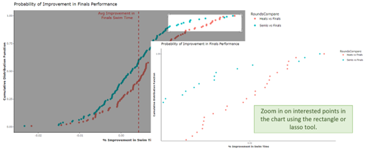

User Guide
1. Introduction
The purpose of this application is to enable swimmers and coaches to incorporate a data-driven approach into their training program. Using analytical tools, the user gains insights that can help improve training and enhance competition performance.
The application comprises six sections, as follows:
About
Data
Speed/Time
Split Times
Performance over Rounds
Prediction
2. Data
The “Data” section displays the primary dataset upon which the app and its analysis are based. Users can explore the dataset by utilizing wildcard searches and sorting expressions to refine and filter the data as desired.
Note that this app was built on a dataset comprising official results from swimming events at the Tokyo Summer Olympics 2020. For more details on how the data was obtained, see our methodology. The features of this app are not specific to the Tokyo Summer Olympics and are envisioned to work on similar datasets, i.e. other swimming competitions that follow a similar format.
3. Speed & Time
The user may select Average Speed and Reaction Time from the dropdown list under “Speed/Time” tab.
3.1 Average Speed
There are sub-tabs under “Average Speed”: Distribution, Compare Speed and Correlation. The unit for average speed is miles per second.
3.1.1 Distribution
There are 2 data visualisations under distribution. The graph on top is the histogram which shows the distribution of the average speed of individual swimmers. The user may hover the pointer over the graph to see the average speed and swimmer name.
On the left, the user can select the parameters for the histogram graph:
Select type of styles, gender, distance and rounds. The user can select multiple options for each parameter
Select the bin width
By customizing bin width, the user may better visualize the pattern for different parameters.
The Scatterstats Plot below shows the average speed of swimmers coming from different continents. The continent data comes from the “Country” attribute of each swimmer. Taking reference from the histogram, the user may choose the appropriate statistics test to compare the average speed of different continent. A statistical formula is shown in the chart which gives information about the correlation and significance.
Similar to the Histogram, the user may select the parameters for the charts:
Select type of styles, gender, distance and rounds. The user may select multiple options for each parameter
Select the statistical test for the comparison. Options include parametric, nonparametric, robust, and bayes
3.1.2 Compare Means
There are 4 violin boxplot under “Compare Mean” tab. Each of the plots shows the distribution of average speed for Style, Gender, Distance and Round respectively.
The user may select the parameters to customize charts:
Select type of styles, gender, distance and rounds. User can select multiple options for each parameter
Select the statistical test for the comparison. Options include parametric, nonparametric, robust, and bayes
By choosing the right parameters, the user may test the null hypothesis that average speed distribution is the same for each of the parameters across the same events/gender/style or rounds. A statistical formula is shown in the chart which gives information about the correlation and significance.
3.1.3 Correlation
A scatterplot is used to shows the correlation between Average Speeds and Reaction Time. The Y-axis represents Reaction Time and X axis represents Average Speed. A statistical formula is shown in the chart which gives information about the correlation and significance.
The user may select the parameters to customize charts:
Select type of styles, gender, distance and rounds. The user may select multiple options for each parameter
Select the statistical test for the comparison. Options include parametric, nonparametric, robust, and bayes. The user may refer to the histogram under “Distribution” tab to determine the appropriate statistic test.
3.2 Reaction Time
Reaction Time has the similar layout for all the graphs as 3.1 Average Speed. There are sub-tabs including Distribution, Compare Speed and Correlation. The unit for Reaction Time is number of seconds.
4. Split Times
In this section, the user can explore and confirm hypotheses about split times and pacing strategies. Note that only race distances of 200m and over are included in this section, since these are distances that are more relevant in the examination of split times and pacing.
The user may provide the following input in the sidebar: the event, the range to be considered as “even” pacing, the distance method for clustering, the method for clustering, and the number of clusters. The default values are shown above.
4.1 Overview

In the “Overview” sub-section, the user will see two adjacent charts: to the left is a multiple line chart showing the split speeds for each swimmer for the chosen event, and to the right is a column chart showing the average speeds for each swimmer. In the right-hand chart, swimmers are arranged in descending order of speed from top to bottom. The user can highlight a swimmer in either chart, which will highlight the same swimmer in the corresponding chart. When hovering over a swimmer in the line chart, the user will also be able to see the swimmer’s ID, place (final position in the race), and final race time.
Note that a swimmer may appear more than once if the swimmer participated in more than one round (e.g. Heat and Semi-Final).
4.2 Distance
In the “Distance” sub-section, the user will see two adjacent charts. To the left, we consider all splits; to the right, we exclude the first and last split. Each chart is a scatterplot with regression line showing the linear relationship between the distance which the swimmer is at during a given split, and the speed at that split. Below each chart are the results of the Pearson’s correlation test, from which p-value and confidence interval, and correlation coefficient, the user may determine the significance and strength of the linear relationship.
4.3 Pacing (Default)
In the “Pacing (Default)” sub-section, the user can explore how swimmer pace changed over the course of the race. Here, there are three default pacing categories: Even (speed in second half of race is within the selected range), Positive Split (slower than “Even” in second half of race), and Negative Split (faster than “Even” in second half of race).
The user may take reference from the frequency table when deciding on the range for “Even”. The numbers on the slider refer to the speed in the second half of the race, as a percentage of the speed during the first half of the race.
During the first split, a swimmer’s speed is additionally determined by reaction time and dive. During the last split, a swimmer’s speed is also affected by not having to do a “turn” at the end of the lap. Since swimmer speed during the first and last splits of a race tend to be deviate greatly from their speeds during the middle of the race, these are excluded from this analysis.
There are two adjacent charts below the frequency table. These are similar to the charts in 4.1 Overview, except that hovering over either highlights the whole of the desired pacing category.
4.4 Pacing (Clusters)
In the “Pacing (Clusters)” sub-section, the user may explore the presence of alternative pacing categories to the default. The variables being passed into the clustering function are the changes in speed between adjacent splits. Three arguments are used in the hierarchical clustering process: the distance method, the hierarchical clustering method, and the number of clusters.
The user may select from five of the six available distance calculation methods offered by R’s dist() function. The “binary” method of distance calculation is excluded as it is inappropriate in this context. The default method is “Euclidean”, which is also the default method of the dist() function.
The user may also select one of four more common hierarchical clustering methods offered by R’s hclust(). The default is “complete”, which is also the default method of the hclust() function.
Finally the user may choose the number of clusters. The default is 4, which is one more than the three default pacing categories.
The “Pacing (Clusters)” sub-section has two tab panels. The first, shown above, displays the dendrogram showing the clusters per user’s choices.
The second, shown below, displays the split speeds line charts and average speed column charts. By hovering the pointer over a line or column of interest, all swimmers in the same pacing cluster will be highlighted.
4.5 Performance
In the last sub-section, the user is able to compare the median average speeds (in metres per second) within each approach to categorising pacing (i.e. default or clusters), using one-way analysis of variance (ANOVA). Clusters with fewer than two data points are automatically dropped. In this regard, the null hypothesis is that there is no difference in median average speed across pacing categories, and the alternative is that there is. By comparing both charts, the user may also be better informed whether to apply the default pacing categories in the user’s training programme, or to consider alternative pacing categories (i.e. clusters).
In most cases, the number of data points in each pacing category or cluster would be less than 30. This is due to the size of the overall dataset. Hence the ANOVA test performed is a non-parametric one, and the centrality parameter applied is the median. A future iteration of the app may allow the user to test for normality in data distribution and opt for a parametric approach instead.
5. Performance Over Time
In the “Performance Over Time” section, the user can select the appropriate filters to be applied to the Cumulative Distribution Function plot and Gradient Interval plot respectively.
5.1 Plot Outputs
To the right of the side bar, the user will find the Cumulative Distribution Function plot and Gradient Interval plot respectively. Various interactive elements have been incorporated into the CDF plot to enhance analytic capabilities:
- Hover data
- Selection Data

6. Prediction
In the “Prediction” section, the user has the ability to build an appropriate regression model by selecting the appropriate filters to be used.
By default, all independent variables are included in the model. However, after performing multi-collinearity model diagnostic checks, the user can identify highly correlated attributes that can negatively impact the model’s performance. The user can then decide which attributes to retain or drop in order to recalibrate the model.
The regression model’s output and statistics are generated dynamically, allowing users to visualize the model’s results as it is being constructed in real-time.